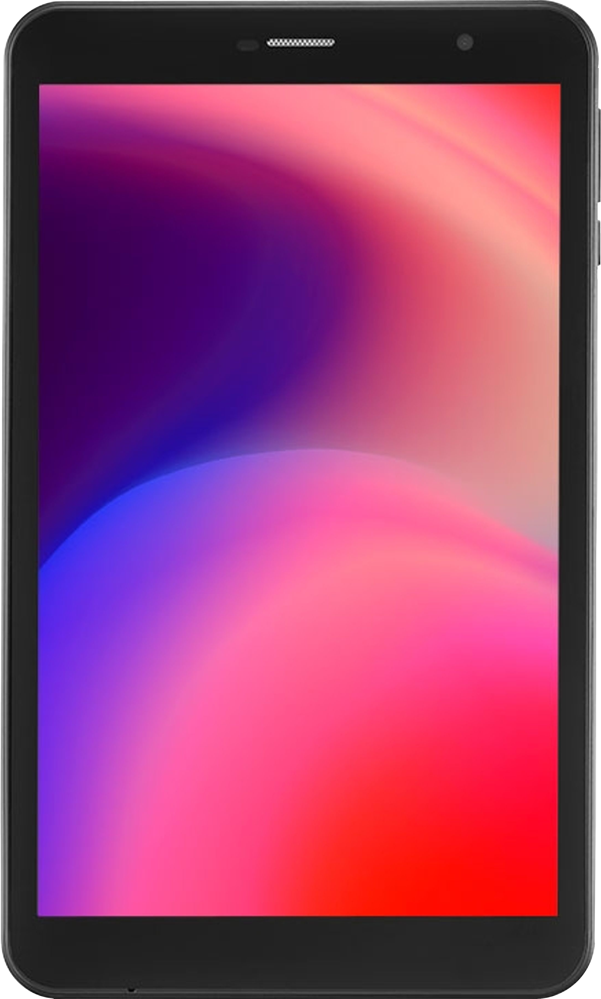

 |
|
⚠️Atenção: Eu não sou especialista.
Fontes: cruzamentos entre o site da Multilaser, o aplicativo
Device Info HW (modo root)
, Anatel e lojas online.
| Modelo | Multilaser M8 4G, ML_SO0V_M8_4G |
| Regiões onde é vendido | Brasil🇧🇷️ |
| Marca | Multilaser |
| Data de lançamento | Sem dados. (M8 4G T3 certificado pela Anatel no dia 12/06/2024) |
| Espessura | 9.0 mm |
| Altura x largura | 208mm x 125mm |
| Peso | 360 g |
| Construção e materiais | Corpo de plástico |
| Resistência à água e outros | Sem dados. Provavelmente não. |
| Cores | Apenas preto (cinza escuro). |
| Número de Homologação da Anatel | 014342203111 |
| Tipo de tela | IPS LCD |
| Tamanho | 108 mm de largura, 172 mm de altura e ~8 polegadas de diâmetro |
| Razão entre tela e corpo (com bordas arredondadas) | ~71.68% |
| Resolução | 800 x 1280 (16:10) |
| Máximo de toques simultâneos | 10 |
| Densidade de pixels/polegada | 189 ppi ou ~188.68 ppi |
| Cores | 16 milhões |
| Resistência a riscos | Sem dados. Provavelmente não. |
| Taxa atualização em Hertz | 60 Hz |
| Brilho da tela | 400 nits |
| No lançamento | Android 11 Go Edition. |
| Na última edição desta página | Android 13 Go Edition (patch de segurança de 08/2025) |
| Interface e aplicativos | AOSP, Google Mobile Services, Google Kids Space, YouTube Kids, aplicativo de "limpeza de armazenamento e memória RAM", DuraSpeed, Multi, Multi Ajuda, Multi Recursos, Multi Feedback e Multi Sell Out. |
| Navegador web | Chrome |
| Suporte a teclado físico e mouse | Sim |
| SoC | MediaTek Helio P22, 64 bits, 12 nm (nas outras variantes "irmãs" do M8 4G isso pode ser diferente) |
| Número de núcleos | 8 |
| Grupo 1-4 | 4x 2.00 GHz Cortex-A53 |
| Grupo 5-8 | 4x 1.50 GHz Cortex-A53 |
| GPU | PowerVR Rogue GE8320 |
| Benchmarks | Antutu v9 e v10: não suportado Geekbench v5 e v6: não suportado 3DMark (Sling Shot Extreme): 401 pontos |
| Memória RAM | 2 GB LPDDR4 (parece que há variantes "irmãs" do M8 4G com 3 GB e 4 GB, nessas variantes não sei se inclui memória Swap) |
| Armazenamento interno | 32 GB eMMC (há variantes "irmãs" com 64 GB) |
| Cartão MicroSD | até 64 GB |
| Número de slots de SIMs | 1 (um) |
| Tamanho do chip | MicroSIM |
| Redes móveis | 2G, 3G e 4G |
| Bandas e frequências | ... |
| Sensor da câmera traseira | Samsung S5K5E8YX |
| Resolução da foto da câmera traseira | 5.0 MP (2592x1944) |
| Resolução do vídeo da câmera traseira | 1920x1080 15 FPS ou 1280x720 15 a 16 FPS |
| Tem flash LED? | Não. As outras variantes do M8 4G podem ter. |
| Abertura focal | f/2.8 |
| Comprimento do foco | 2.0 mm |
| Comprimento focal (equivalente a 35 mm) | 25.5 mm |
| Modos de foco | infinity, auto, macro, continuous-video, continuous-picture |
| Tamanho do sensor | 2.58 mm x 2.2 mm |
| Tamanho da diagonal do sensor | 3.39 mm |
| Tamanho do pixel | ~1.06 µm |
| Autofocus | Não sei |
| Touch focus | Suportado |
| Estabilização de imagem | Não sei |
| Zoom digital | 4x |
| Detecção de rosto | Sim |
| Sensor BSI | Não sei |
| HDR | Não sei |
| ISO | 100-2400 |
| Sensor da câmera frontal | GalaxyCore GC02M1 |
| Resolução da foto da câmera frontal | 2.0 MP (1600x1200) |
| Resolução do vídeo da câmera traseira | 1280x720 15 FPS |
| Tem flash LED? | Não. |
| Abertura focal | f/2.8 |
| Comprimento do foco | 2.83 mm |
| Comprimento focal (equivalente a 35 mm) | 12.0 mm |
| Modos de foco | infinity |
| Tamanho do sensor | 8.19 mm x 6.14 mm |
| Tamanho da diagonal do sensor | 10.24 mm |
| Tamanho do pixel | ~5.12 µm |
| Autofocus | Não sei |
| Touch focus | Não |
| Estabilização de imagem | Não sei |
| Zoom digital | 4x |
| Detecção de rosto | Sim |
| HDR | Não sei |
| ISO | 100-19200 |
| Auto-falantes | Um autofalante "regular" mono e um autofalante para telefone |
| Microfone | Existe |
| Formatos de vídeo | ... |
| Formatos de áudio | ... |
| USB | USB Type-C reversível |
| Microfone | Não sei |
| Entrada P2 para fone de ouvido | Sim |
| Bluetooth | 5.0 Low Energy |
| Wi-Fi | 802.11 a/b/g/n/ac (Wi-Fi 5) (2.4GHz, 5GHz)
Wi-Fi Direct, hotspot, WPA3/SAE |
| DLNA | Não sei |
| GPS | GPS🇺🇸, A-GPS, GLONASS🇷🇺, GALILEO🇪🇺, BeiDou🇨🇳 |
| NFC | Não |
| Sensores | Apenas Acelerômetro e Proximidade |
| Vibração | Sim |
| Tipo | Li-Ion: íons de lítio |
| Dificuldade de remoção da bateria | É necessário remover a tampa traseira inteira para acessá-la. |
| Modelo do carregador original da caixa | Multilaser Industrial S.A CPNB002JM |
| Entrada do carregador original da caixa | 100V-240V 50/60Hz 0.3A |
| Saída do carregador original da caixa | DC 5V 1.5A |
| Carregamento sem fio / indução | Não |